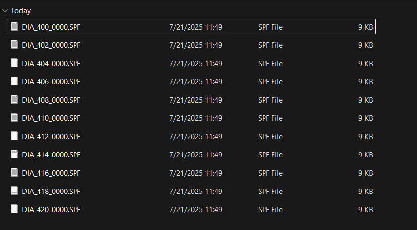

生成代码
EnveloGrinding 提供便捷的代码生成功能，用户仅需简单配置，即可生成用于包络蜗杆加工的 CNC 代码。
参数设置
在 磨削参数 - 基本参数 面板中：
- 根据图纸设置
中心距/蜗杆喉部直径/涡轮齿数/蜗杆旋向/涡轮加工角度/砂轮安装倾角等工件参数。 - 根据数控凸轮磨床的砂轮直径范围，设置
磨削总深度/最大砂轮直径/最小砂轮直径/砂轮直径间隔等参数。 - 在
输出程序路径参数中，指定输出加工代码的目标文件夹。
- 根据图纸设置
在 磨削参数 - 高级参数 面板中：
- 根据砂轮蜗杆齿槽形状和分度圆直径实际值，设置
砂轮分度圆齿顶高。 - 根据机床各轴机械尺寸设置几何尺寸参数。
- 手动将砂轮对准工件中心槽后，获取 XZBC 各轴坐标值并输入。
- 根据砂轮蜗杆齿槽形状和分度圆直径实际值，设置
配置完成后，点击
生成代码按钮，即可生成凸轮加工代码。
数据结构
生成完成后，EnveloGrinding 会自动打开输出程序目录，并创建以工件中心距数据命名的子文件夹。加工代码及其他相关输出文件将存放于该文件夹中，目录结构如下：
PC_文件名
├── DIA_400_0000.SPF
├── DIA_402_0000.SPF
├── DIA_404_0000.SPF
├── DIA_406_0000.SPF
├── DIA_408_0000.SPF
├── DIA_xxxxxxxx.SPF

每个文件都是一个砂轮直径下的加工程序，两个文件之间按照设置的砂轮直径间隔命名，生成的包络蜗杆加工代码可直接拷贝至数控磨床进行加工。
默认输出内容
默认情况下，生成的加工代码使用离散点格式，通过 XC 插补的方式运行，包含 3600 个离散点。示例代码如下：
;*****版本及日期*********
;软件版本:1.3.2
;生成日期:2025-07-21 11:49:32
;*****加工参数***********
;涡轮分度圆半径: 110.0500mm;
;涡轮加工角度: 50.0000度;
;涡轮齿数: 60齿;
;蜗杆螺旋角度: 7.0000度;
;蜗杆旋向: 右旋;
;磨削方向: 从右往左;
;砂轮直径: 400.0000mm;
;分度圆齿顶高: 3.4000mm;
;磨削余量: 1.0mm;
;磨削尺寸调整: 0.0mm;
;*****输出数据***********
;Y轴加工位置: -9.1688;
;*****外部全局变量*********
;FeedLeft - 剩余磨削量
;Center_Pos_X - 基准圆心坐标.X
;Center_Pos_Z - 基准圆心坐标.Z
;Center_R - 基准圆圆弧半径
;Start_Pos_X - 磨削起点坐标.X
;Start_Pos_Z - 磨削起点坐标.Z
;Start_Pos_B - 磨削起点角度.B - 绝对坐标
;Start_Pos_C - 磨削起点角度.C - 绝对坐标
;End_Pos_X - 磨削终点坐标.X
;End_Pos_Z - 磨削终点坐标.Z
;End_Pos_B - 磨削终点角度.B - 绝对坐标
;End_Pos_C - 磨削终点角度.C - 增量角度
;****************
DEF REAL currentValue;
STOPRE;
currentValue = FeedLeft;
IF (currentValue>=1.00) GOTOF CV_1_00;
IF (currentValue<1.00) AND (currentValue>=0.90) GOTOF CV_0_90;
IF (currentValue<0.90) AND (currentValue>=0.80) GOTOF CV_0_80;
IF (currentValue<0.80) AND (currentValue>=0.70) GOTOF CV_0_70;
IF (currentValue<0.70) AND (currentValue>=0.60) GOTOF CV_0_60;
IF (currentValue<0.60) AND (currentValue>=0.50) GOTOF CV_0_50;
IF (currentValue<0.50) AND (currentValue>=0.40) GOTOF CV_0_40;
IF (currentValue<0.40) AND (currentValue>=0.30) GOTOF CV_0_30;
IF (currentValue<0.30) AND (currentValue>=0.20) GOTOF CV_0_20;
IF (currentValue<0.20) AND (currentValue>=0.10) GOTOF CV_0_10;
IF (currentValue<0.10) AND (currentValue>=0.00) GOTOF CV_0_00;
IF (currentValue<0) GOTOF CV_0_00;
CV_1_00:
;基准圆心坐标
Center_Pos_X= -693.7800 ;X坐标
Center_Pos_Z= -73.4278 ;Z坐标
Center_R= 697.6549 ;圆弧半径
;============
;磨削起点坐标
Start_Pos_X= -33.9699 ;X坐标
Start_Pos_Z= -300.0837 ;Z坐标
Start_Pos_B= -25.0000 ;B绝对角度
Start_Pos_C= 290.0000 ;C绝对角度
;============
;磨削终点坐标
End_Pos_X= -96.0337 ;X坐标
End_Pos_Z= 286.3245 ;Z坐标
End_Pos_B= 25.0000 ;B绝对角度
End_Pos_C= 3000.0000 ;C轴终端增量角度
RET
CV_0_90:
;基准圆心坐标
Center_Pos_X= -693.6800 ;X坐标
Center_Pos_Z= -73.4278 ;Z坐标
Center_R= 697.5554 ;圆弧半径
;============
;磨削起点坐标
Start_Pos_X= -33.9605 ;X坐标
Start_Pos_Z= -300.0414 ;Z坐标
Start_Pos_B= -25.0000 ;B绝对角度
Start_Pos_C= 290.0000 ;C绝对角度
;============
;磨削终点坐标
End_Pos_X= -96.0243 ;X坐标
End_Pos_Z= 286.2822 ;Z坐标
End_Pos_B= 25.0000 ;B绝对角度
End_Pos_C= 3000.0000 ;C轴终端增量角度
RET